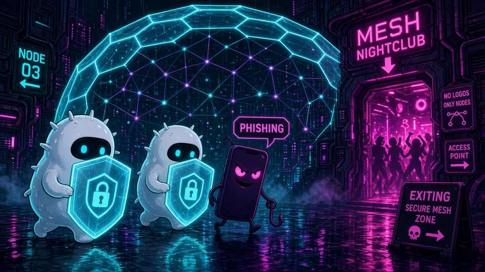

Ep4/5 · AegisNet immuneOS — NuN Nexus of Unity

Rain shines on a cyber street outside the Mesh Nightclub, where a giant hexagon dome of light protects the dancing network nodes inside. Two chubby white-cell guardian drones, shields raised with padlock icons, march a sneaky purple phone-creature with a fishing hook away from the door. Its speech bubble says it all: PHISHING. A sign points the way out: Exiting Secure Mesh Zone. This is AegisNet immuneOS, the immune system of the NuN Nexus. In real life, @immuneos takes scams apart in plain words, like fake 'police' calls, and offers a human check on suspicious messages.